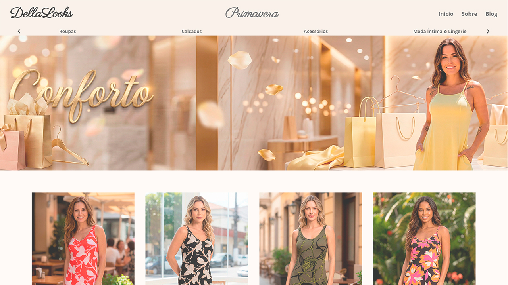
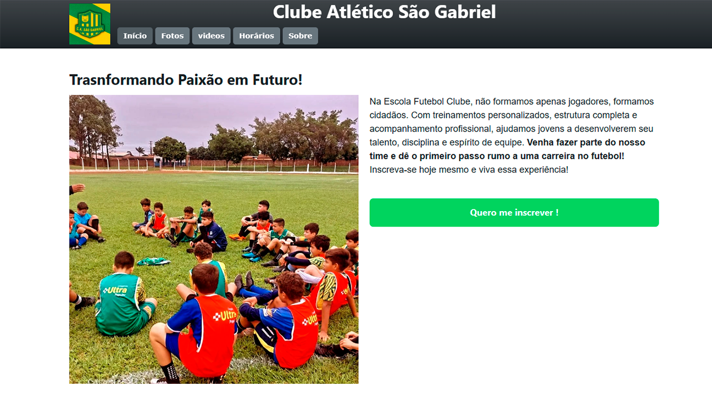
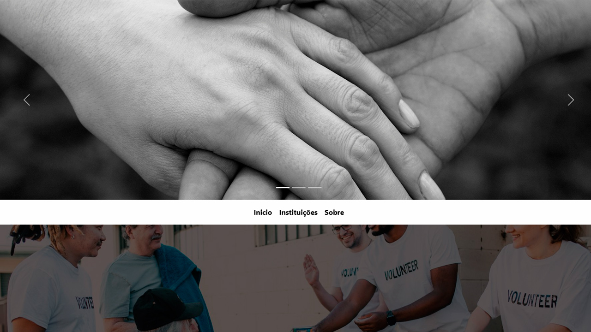
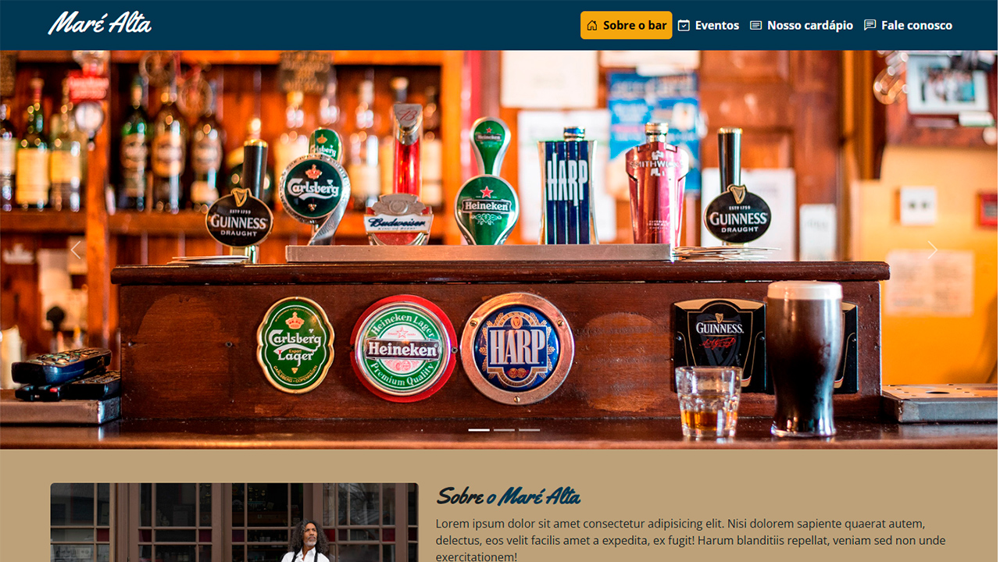

ATCCONCEITO WEB
Andradina
Tênis Clube
Site institucional e área administrativa demonstrativaTênis Clube
Andradina Tênis Clube
Conceito de site moderno para clube, com experiências para associados, formulários e recursos de gestão em demonstração.
Analista de Sistemas e desenvolvedor focado em experiências digitais, interfaces responsivas e sistemas que simplificam o dia a dia.
Uma seleção de conceitos em desenvolvimento e projetos de estudo que mostram diferentes soluções e abordagens.
Conceito de site moderno para clube, com experiências para associados, formulários e recursos de gestão em demonstração.
Identidade digital e vitrine de serviços de desenvolvimento com seleção de planos e orçamento personalizado por WhatsApp.

Vitrine web responsiva de moda com foco na organização de produtos e navegação visual.

Projeto responsivo de apresentação de uma escola de futebol, com informações organizadas para o público.

Interface que aproxima visitantes de organizações sociais e facilita o acesso às iniciativas disponíveis.
Projeto de vitrine digital com identidade temática, organização visual e navegação responsiva.

Estudo de interface comercial e experiência de navegação com atenção à apresentação dos produtos.
Sou João Gabriel, desenvolvedor web e Analista de Sistemas. Gosto de transformar necessidades reais em experiências claras, rápidas e fáceis de usar — da interface à estrutura que sustenta cada projeto.
Minha atuação une desenvolvimento, organização de informações e atenção aos detalhes. Cada solução tem seu contexto, e meu objetivo é entregar tecnologia útil, não complexidade desnecessária.
Conhecer meu GitHub ↗Para sites, sistemas, ideias e possíveis colaborações, entre em contato.